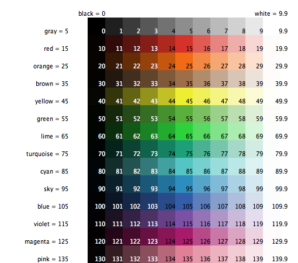
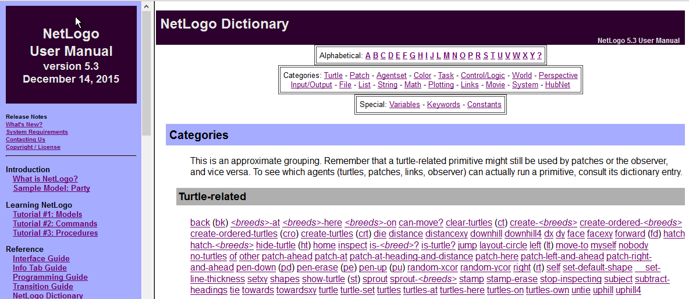
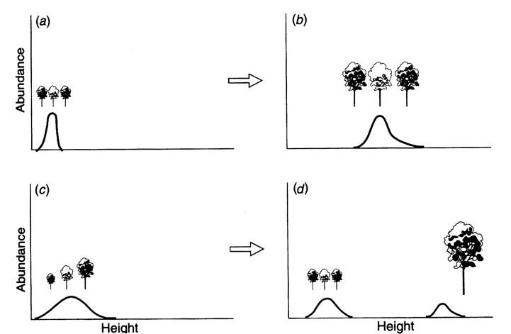
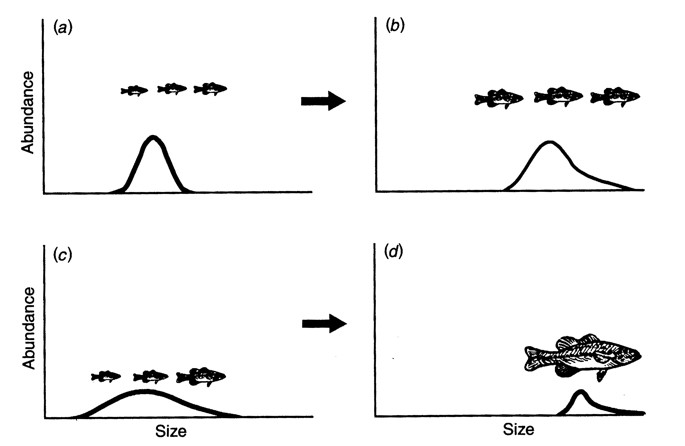
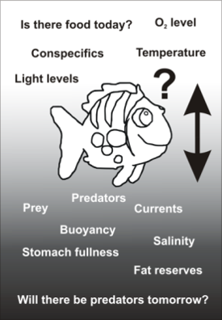

NetLogo Basics
EES 4760/5760
Agent-Based and Individual-Based Computational Modeling
Jonathan Gilligan
Class #3: Tuesday August 29 2019
Agenda
- Understanding structure of NetLogo models
- Elementary NetLogo commands
- Some principles of good programming
- Overview of agent-based modeling
Start NetLogo on the computer in front of you.
Remember: All slides from class are available at https://ees4760.jgilligan.org/
Fundamentals of NetLogo
Four Fundamental Code Parts
|
|
|
|
|
|
|
|
Objects (Nouns)
Two categories of objects:
- Turtles
Turtles are any kind of agent
Turtles can move around
-
Turtles have properties (
turtles-own)turtles-own [ age height hunger ] -
Your model can have more than one “breed” of turtle (e.g., wolves and sheep)
breed [wolves wolf] breed [sheeps sheep] ; names must be distinct
- Patches
Patches represent the environment in which turtles live
Patches are always square and stationary
-
Like turtles, patches can have properties
patches-ownpatches-own [ elevation fertility ]
Why “Turtles”?

- The Logo language originated before graphical displays were common.
- Seymour Papert invented a robot turtle that would roll around under computer control
- It had a pen or pencil that it could raise or lower to trace out its path on a piece of paper.
- NetLogo agents share behavior with the original turtle:
- Turn left or right
- Move forward
- Raise or lower a “pen” to trace their paths
Operations (Verbs)
Two kinds of operations:
- Procedures
Do things (eat, move, grow, buy, sell, …)
-
Defined using
to:to wander right random 360 forward random 5 end
- Reporters
Calculate something and return a value
-
Defined using
to-report:to-report turtles-nearby report count turtles-on neighbors end
Let’s Build A Model!
A Simple Model of an Ecosystem
- The landscape is initialized with random amounts of sugar on each patch
- 100 turtles live on the landscape
- At each tick:
- Every patch adds 0.075 to its sugar up to a maximum of 100
- Every turtle’s hunger increases by 1, up to a maximum of 10
- Every turtle eats sugar until it is no longer hungry, or the sugar on that patch runs out
- The turtle decides whether it wants to move:
- If there are other turtles on the patch, or if there is not enough sugar on the patch to satisfy its hunger, then the turtle will move to the neighboring patch with the largest amount of sugar.
Create a New Model
- In NetLogo, open File menu and choose New
- Add three buttons:
- “setup” (type “setup” in “Commands” space)
- “go” (check the “forever” button)
- “step” (type “go” in “Commands” space and “step” in “Display Name”)
- Go to the code tab and type this:
globals
[
max-sugar
sugar-growth
]
turtles-own [ hunger ]
patches-own [ sugar ]Model Initialization (setup)
Include only things done once to initialize the model
Example:
clear-all
<set up patch variables>
<paint patches in neat colors>
create turtles
<set up turtle variables, etc.>
<plot initial model state (histograms, etc.)>
reset-ticksInitialize Your Model
Type this into the code tab for your model:
to setup
clear-all
set sugar-growth 0.075
set max-sugar 100
ask patches
[
set sugar random max-sugar
update-pcolor
]
create-turtles 100
[
setxy random-xcor random-ycor
set hunger 5
update-color
]
reset-ticks
end
to update-color
end
to update-pcolor
endScheduled Actions (go)
- “go” is repeated over and over to execute model.
- Include only stuff to be executed each time step
- Keep the “go” procedure simple and neat
- For complicated stuff, call submodels
- Include termination point
Type this into your model:
to go
tick
ask turtles [
if hunger < 10 [ set hunger hunger + 1 ]
eat
move
update-color
]
ask patches
[
if sugar < max-sugar [ set sugar sugar + sugar-growth ]
update-pcolor
]
if ticks > 2000 [ stop ]
end
;
; Submodels
;
to eat
end
to move
endTricky Things
tick vs. ticks
tick— (verb) increments time by one periodticks— (noun) measures the time elapsed since the start-
More technical explanation:
- NetLogo has an internal tick counter
-
tickincrements the tick counter -
ticksreports the current value of the tick counter
-
- NetLogo has an internal tick counter
tick vs. ticks
Good code:
to go
tick
if ticks > max-ticks
[stop]
...
ask turtles [set age ticks]
endBad code:
to go
ticks
if tick > max-ticks
[stop]
...
ask turtles
[
tick
set age ticks
]
endElementary NetLogo Commands
Elementary NetLogo Commands
- Searching NetLogo dictionary
- Working with
agentsets - Working with variables
- Code branching (conditional statements)
- Working with stochasticity
- Working with graphics
- How to make your code legible to others (documentation, comments, and tabbing)
Searching NetLogo Dictionary
- NetLogo dictionary is a web page
- Use “Find on this page” in your web browser.
Working with agentsets (ask)
-
An agentset is a group of zero or more turtles, patches, etc.
- Plural nouns (
turtles,patches) refer to agentsets. - Singular nouns (
turtle,patch) refer to individual agents.
- Plural nouns (
-
“
ask” tells an agent or all members of an agentset to do the code in the following brackets:``` ask turtles [ forward 5 ] ``` All members of the agentset do the code, one at a time
Be careful not to put anything in the brackets that should not be repeated for each member of the agentset!
How are these different?
ask turtles
[
buy
sell
update-bank-account
]ask turtles [buy]
ask turtles [sell]
ask turtles [update-bank-account]Working with agentsets (with)
turtlesis an agentset of all turtles.-
“
with” is one of many primitives that subset an agentset:ask turtles with [color = blue] [move] Similar keywords for sub-setting:
with-min,with-max,n-of,max-n-of,min-n-of,one-of,max-one-of,min-one-ofUse the dictionary to look up correct syntax.
Working with agentsets (of)
-
“
of” provides a list of the values of an-ownvariableset happiness min [happiness] of neighbors -
More generally, “
of” is a primitive for getting a value from another agent or agentsset happiness [happiness] of a-neighbor-turtle Use the dictionary to look up correct syntax.
Add Movement to Our Model
to move
if hunger > sugar
[
move-to max-one-of neighbors [ sugar ]
]
endIf there isn’t enough sugar to satisfy the turtle, it moves to the neighboring patch with the most sugar.
Working with agentsets (=, set)
- Two fundamental kinds of operations:
- Changing the value of a variable:
- Assignment operations (
set)
- Assignment operations (
- Checking to see whether a value satisfies some condition:
- Conditional operations (
=, also>,<,>=,<=,!=)
- Conditional operations (
- Changing the value of a variable:
Equals or no equals?
Assignment statements
- Wrong:
happiness = ([happiness] of a-neighbor-turtle)- Right:
set happiness ([happiness] of a-neighbor-turtle)Conditional statements (Boolean: yes or no)
if happiness = 3
[stop]
if happiness <= 3
[stop]
if happiness != 5 or ticks > 17
[stop]Working with variables: set vs. let
Global variables (known to all procedures)
Local variables (known only to one procedure)
-
Use
letto create and set the value of a new local variable:let mean-neighbor-size mean [size] of turtles-on neighbors -
Use
setto change the value of an existing variable (global, local, patch, turtle, etc.)set wealth wealth * 1.1 set hypotenuse sqrt(a ^ 2 + b ^ 2)
Working On Our Model
Type this into “code” tab to update to eat and to move in our model:
to eat
ifelse hunger > sugar
[
; Use set to change an existing variable "hunger"
set hunger hunger - sugar
set sugar 0
]
[
set sugar sugar - hunger
set hunger 0
]
end
to move
if hunger > sugar or any? turtles-here
[
; Use let to create a new variable "dest"
let dest max-one-of neighbors [ sugar ]
move-to dest
]
endWorking with variables: Giving a value to another agent
- How does one patch (or turtle) give the value of one of its variables to other patches?
- There are two ways to do this.
ask neighbors [set pcolor [pcolor] of myself]let my-color pcolor
ask neighbors [set pcolor my-color]- Turtles implicitly access
patches-ownvariables (e.g.,pcolor,sugar) of the patch they’re on as though they wereturtles-own - Converse is not true: Patches don’t automatically see
turtles-own - Why?
- A turtle can only be on one patch at a time,
- but a patch may have multiple turtles.
Code branching (conditional statements)
ifelse (boolean condition)
[
; Do this if condition is true ...
]
[ ;else
; Do this if condition is false
]Working with stochasticity (randomness)
-
Uniform distribution of random numbers between
aandb:a + random (b-a) -
Normal distribution with mean
mand std. deviations:random-normal m s -
Selecting one patch at random and turn it green
ask one-of patches [set pcolor green] -
Selecting one agent at random from an agentset and turn it right 5 degrees:
ask one-of turtles [right 5]
Working with graphics

Updating Our Model
Type the following into the “code” tab to update the procedures update-pcolor and update-color
to update-pcolor
set pcolor scale-color yellow sugar 0 (2 * max-sugar)
end
to update-color
ifelse hunger > 5
[
set color scale-color red hunger 15 5
]
[
set color scale-color green hunger 5 -5
]
end-
scale-color color number range1 range2sets the lightness of the color. Higher numbers = lighter, lower = darker. - If
range1 > range2, light and dark are reversed.
Running Our Model
- Press “Check” and make sure there are no syntax errors
- Go to “Interface” tab
- Click on “setup”
- Click on “go”
- You can download a copy of the model from https://ees4760.jgilligan.org/models/class_03_example.nlogo
Monitoring and Interacting with a Model
On the “interface” tab:
- Right click and add a Plot
- Name the plot “Hunger”
- Set X max to 10 and Y max to 100
- Type “Hunger” for “X axis label” and “# Turtles” for “Y axis label”
- Click on the pencil icon under “default” pen
- Choose “Bar” for “Mode”
- In “Pen update commands” type
histogram [hunger] of turtles
- Press “OK”
- Right click and add a Slider
- Type “sugar-growth” into “Global Variable”
- Set minimum to 0, increment to 0.005, maximum to 0.1, and value to 0.075
- Open the code tab and comment out definition and initialization of
sugar-growth
globals
[
max-sugar
; sugar-growth
]
...
to setup
clear-all
; set sugar-growth 0.075
...Play with the model
- Do interesting things happen for different values of
sugar-growth? - It might be fun to comment out the line in
to gothat stops the model after 2000 ticks
; if ticks > 2000 [ stop ]Good Practices for Programming
Making your code legible to other people
- Comment, comment, comment.
- Variable declaration: purpose, legal values
- Procedure: purpose and description
- Submodel equations: cite and explain
- Indent code so it shows clear blocks
- After you’re finished coding, take time to write detailed documentation (ODD)
When in doubt, use this.

Agent-Based Models
Agent-based models
Agents/Individuals are discrete, unique, and autonomous entities.
Discrete entities: Important at low densities
Unique: Individuals, even of same age and species, can be different
Individuals have a life history
Interactions among individuals are usually local, not global
Individuals make decisions, which can be adaptive
Ecology or society emerges from individual behavior (bottom-up)
Why agent-based models?
- Individuals/agents are unique and different
- Individuals/agents interact locally
- Individuals/agents show adaptive behavior
Why agent-based models?
Use ABM if one or more of the following are essential to your research question:
- Individual variability
- Local interactions
- Adaptive behavior
- ABMs that include all three elements can be called full-fledged.
- Most ABMs focus on only one or two elements.
Why not agent-based models?
- Too complex
- Too data hungry.
- Too many parameters unknown.
- Too much uncertainty in model structure.
- Hard to test.
- Require too much person and computer power.
When ABMs are too hard, use aggregated modeling techniques:
- Microeconomics looks at aggregate supply and demand;
- does not model individual consumers and producers.
- Biology can use population dynamics without looking at individuals
- Chemists model chemical reactions with rate constants,
- not individual atoms and molecules.
Individual variability

From Huston, M., et al., BioScience 38, 682 (1988)
Adaptive behavior

Adaptive behavior:
Characteristic patterns in trout habitat selection
Adaptive behavior:
Characteristic patterns in trout habitat selection
- Use of shallow habitat when small; deep habitat when big
- Shift in habitat when predators, larger competitors are introduced
- Hierarchical feeding: big guys get the best spots
- Movement to margins during floods
- Use of slower, quieter habitat in high turbidity
- Use of lower velocities at lower temperatures
Source: Railsback and Harvey, 2002.
Example: flocks of starlings
- Thousands of individuals
- unique and different
- interact locally
- show adaptive behavior